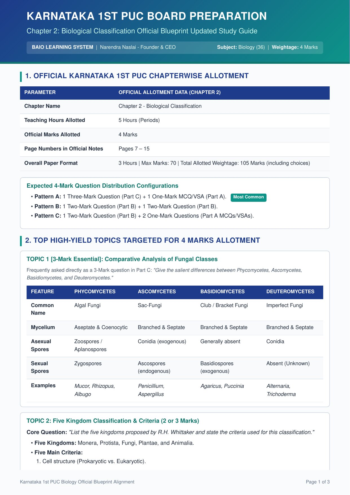
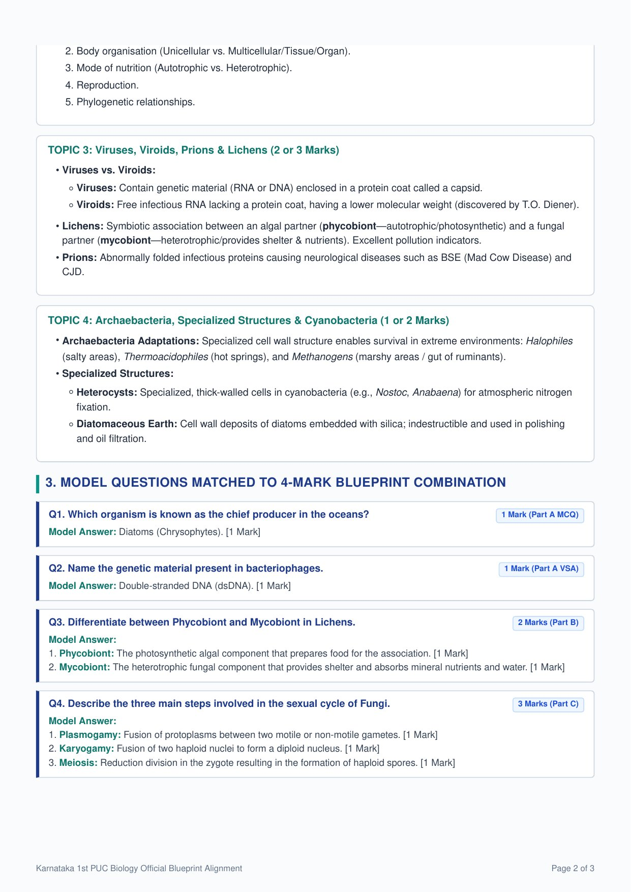
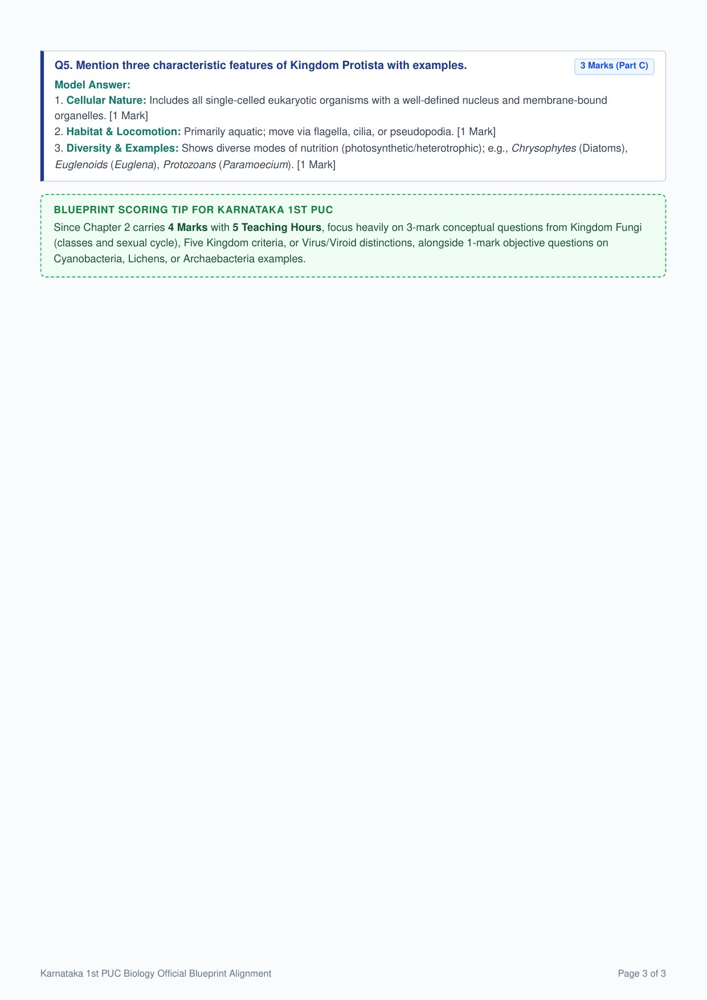
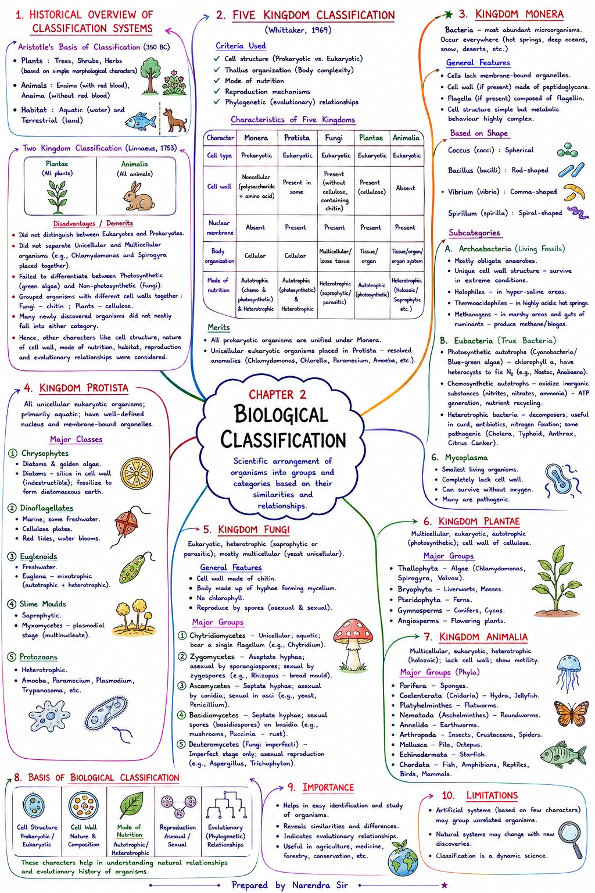

PU-I Biology · NEET / KCET Aligned
Biology All In One (BAIO) Learning System
Chapter 2: Biological Classification
Card 1 / 60
TERM
ANSWER
Tap the card to flip
📍 Next step in your study path
Configure your quiz
Full Chapter
Topic-wise
10
25
50
All matching
My NEET Performance Tracker
Every NEET Practice session you complete is saved here automatically (on this device)
Score History
Session Log
NEET Practice Bank
8 question formats · NEET-style marking (+4 / −1 / 0)
🎯 Practice Weak Topics
Auto-selects the topics you're scoring lowest on.
Full Chapter
Topic-wise
10
25
50
90
All matching
20s
30s
60s
🔄 Prioritizes questions you haven't seen yet, so every session feels fresh
KCET Practice Bank
4 question formats · KCET-style marking (+1 / 0, no negative marking)
🎯 Practice Weak Topics
Auto-selects the topics you're scoring lowest on.
Full Chapter
Topic-wise
10
25
50
60
All matching
20s
30s
40s
60s
1:20
🔄 Prioritizes questions you haven't seen yet, so every session feels fresh
Overall Performance Tracker
Combined history across MCQ Quiz and NEET Practice (saved on this device)
Score History
Session Log
Custom Theory & NEET Paper Generator
Build a printable question paper from this chapter's question bank
Theory Paper
NEET Paper
Full Chapter
Select Topic(s)
Board Important – Karnataka 1st PUC Blueprint
Official chapter-wise weightage, high-yield topics & model answers · scroll or drag to pan, hold Ctrl and scroll (or press +/−) to zoom, arrow keys to pan when focused, pinch to zoom on touch · 3 pages



Important Diagrams
📖 Every high-yield figure in this chapter, ranked by board-exam priority with typical mark weightage, the exact labels to practice, and a direct link to the matching page of the official NCERT PDF — so you always know which diagrams matter most and where to see them.
Biological Classification — Important Diagrams & Marks Guide
Board-exam priority list of key diagrams with mark weightage, NCERT page numbers and labels to practice.
Kingdom Monera
Fig 2.1 — Bacteria of Different Shapes
2 M
★★☆ High Priority
Cocci (spherical), Bacilli (rod-shaped), Spirilla (spiral), Vibrio (comma)
View page 12 in NCERT PDF →
Fig 2.2 — Filamentous Blue-Green Alga (Nostoc)
2 – 3 M
★★★ Top Priority
Heterocyst (N₂ fixation site — a specialised, thick-walled, anaerobic cell), Mucilaginous/Gelatinous sheath
View page 13 in NCERT PDF →
Fig 2.3 — Dividing Bacterium (Binary Fission)
2 M
★★☆ High Priority
Cell wall, Cell membrane, DNA/Nucleoid dividing into daughter cells
View page 14 in NCERT PDF →
Kingdom Protista
Fig 2.4(a–d) — Protista (Euglena, Paramoecium, Dinoflagellate, Slime mould)
2 – 3 M
★★★ Top Priority
Euglena — Pellicle, 2 flagella; Paramoecium — Cilia, Gullet, Contractile vacuole; Dinoflagellate — Cellulose plates
View page 15 in NCERT PDF →
Kingdom Fungi
Fig 2.5(a–c) — Fungi Types (Mucor, Aspergillus, Agaricus)
1 – 2 M
★☆☆ Moderate
Mucor — Sporangiophore & Sporangium; Aspergillus — Conidiophore & Conidia
View page 17 in NCERT PDF →
Viruses, Viroids & Prions
Fig 2.6(b) — Bacteriophage
2 – 3 M
★★★ Top Priority
Hexagonal Head (dsDNA), Collar, Helical Sheath, Tail fibres, Base plate
View page 20 in NCERT PDF →
Fig 2.6(a) — Tobacco Mosaic Virus (TMV)
2 – 3 M
★★★ Top Priority
Helical Capsid (Capsomeres), Single-stranded RNA (ssRNA) core
View page 20 in NCERT PDF →
My Own Study Notes
Write your own notes for this chapter in your own words — a great way to revise. Saved automatically on this device as you type. Use "Print / Download as PDF" any time to get a clean, printable copy with your name and roll number on it.
Last-Minute Revision
Condensed cheat-sheet · jump to a topic or scroll through
1. Early Systems
2. Five Kingdoms
3. Monera
4. Protista
5. Fungi
6. Plantae/Animalia
7. Viruses etc.
8. Lichens
350 BCAristotle – morphology-based (trees/shrubs/herbs; Enaima/Anaima)
1753Linnaeus – Two Kingdom (Plantae, Animalia)
1969R.H. Whittaker – Five Kingdom classification
1892D.J. Ivanowsky – discovered virus (TMV, bacteria-proof filter)
1898M.W. Beijerinck – "Contagium vivum fluidum"
1935W.M. Stanley – crystallized viruses (proteins)
1971T.O. Diener – discovered viroids (PSTVD)
Pasteurcoined the term "virus" (= venom/poison)
Mnemonic (5 Kingdoms order): "Monkeys Play Football Perfectly Always" → Monera, Protista, Fungi, Plantae, Animalia
Mnemonic (Fungi classes): "Please Ask Big Doctors" → Phycomycetes, Ascomycetes, Basidiomycetes, Deuteromycetes
Mnemonic (Protista classes): "Cats Don't Eat Small Prey" → Chrysophytes, Dinoflagellates, Euglenoids, Slime moulds, Protozoans
My Mnemonic Workspace
Write your own memory tricks below – they're saved on this device automatically.
1. Early Classification Systems
- Aristotle (350 BC): Plants → trees, shrubs, herbs; Animals → Enaima (red blood) / Anaima (no red blood); Habitat → aquatic/terrestrial.
- Linnaeus (1753): Two Kingdom – Plantae + Animalia.
- Demerits: No eukaryote/prokaryote split; no unicellular/multicellular split; fungi (chitin) wrongly grouped with plants (cellulose); many organisms didn't fit.
- New criteria added: cell structure, cell wall, nutrition, reproduction, evolutionary relationship.
2. Five Kingdom Classification
- Proposed by R.H. Whittaker (1969). Criteria: cell structure, thallus organisation, mode of nutrition, reproduction, phylogenetic relationships.
- Merit: unified all prokaryotes under Monera; unicellular eukaryotes (Chlamydomonas, Chlorella, Paramecium, Amoeba) grouped under Protista.
| Character | Monera | Protista | Fungi | Plantae | Animalia |
|---|---|---|---|---|---|
| Cell type | Prokaryotic | Eukaryotic | Eukaryotic | Eukaryotic | Eukaryotic |
| Cell wall | Non-cellulosic | In some | Chitin | Cellulose | Absent |
| Nuclear membrane | Absent | Present | Present | Present | Present |
| Body org. | Cellular | Cellular | Multicellular/loose tissue | Tissue/organ | Tissue/organ/system |
| Nutrition | Auto+Hetero | Auto+Hetero | Heterotrophic | Autotrophic | Heterotrophic |
3. Kingdom Monera
- All prokaryotes; sole members = Bacteria; most abundant, most metabolically diverse.
- Shapes: Coccus (spherical), Bacillus (rod), Vibrium (comma), Spirillum (spiral).
- Archaebacteria: extreme habitats, different cell wall → Halophiles (salt), Thermoacidophiles (hot springs), Methanogens (marshy/gut – biogas).
- Eubacteria: rigid wall + flagellum. Autotrophic – photosynthetic (Cyanobacteria, chlorophyll a, heterocysts fix N₂, e.g. Nostoc, Anabaena) or chemosynthetic. Heterotrophic – decomposers, some pathogenic.
- Mycoplasma: smallest living organism, no cell wall, survives without O₂.
- Reproduction: fission (asexual), spores (unfavourable), conjugation (DNA transfer – sexual-like).
- Key pathogens: cholera – Vibrio cholerae; typhoid – Salmonella typhi; anthrax – Bacillus anthracis; citrus canker – Xanthomonas axonopodis.
4. Kingdom Protista
- All unicellular eukaryotes; mostly aquatic; flagella/cilia made of tubulin.
- Chrysophytes: diatoms (silica shell, indestructible → diatomaceous earth) & desmids; chief producers of ocean.
- Dinoflagellates: 2 flagella, cellulose plates; red tides (Gonyaulax).
- Euglenoids: pellicle (no cell wall), mixotrophic, connecting link plant–animal (Euglena).
- Slime moulds: saprophytic; plasmodium stage; spores resistant, wind-dispersed.
- Protozoans (all heterotrophic): Amoeboid (Amoeba, Entamoeba), Flagellated (Trypanosoma, sleeping sickness), Ciliated (Paramecium, gullet), Sporozoans (Plasmodium – malaria).
5. Kingdom Fungi
- Heterotrophic; body = hyphae → mycelium; cell wall = chitin; coenocytic or septate hyphae.
- Symbiosis: with algae → lichens; with plant roots → mycorrhiza.
- Reproduction: vegetative (fragmentation/budding), asexual (conidia/sporangiospores/zoospores), sexual (plasmogamy → karyogamy → meiosis); dikaryotic (n+n) stage in Ascomycetes & Basidiomycetes.
- Phycomycetes: aseptate/coenocytic, aquatic/damp (Mucor, Rhizopus, Albugo).
- Ascomycetes: sac fungi, septate, conidia + ascospores in asci (Aspergillus, Penicillium, Neurospora); Penicillin source.
- Basidiomycetes: club fungi, septate, basidiospores on basidia (Agaricus, Puccinia, Ustilago).
- Deuteromycetes: "imperfect fungi" – sexual stage unknown; only conidia (Alternaria, Trichoderma, Colletotrichum).
6. Kingdom Plantae & Animalia
- Plantae: eukaryotic, autotrophic, cellulose wall; some partial heterotrophs (Drosera, Dionaea, Nepenthes) or parasites (Cuscuta); alternation of generation (sporophyte ↔ gametophyte).
- 5 divisions: Algae → Bryophyta → Pteridophyta → Gymnosperms → Angiosperms.
- Animalia: heterotrophic, eukaryotic, multicellular, no cell wall; internal digestion; glycogen/fat storage; sexual reproduction by copulation.
7. Viruses, Viroids & Prions
- Viruses: acellular, obligate parasites, "living" only inside host; nucleoprotein with DNA or RNA (never both); capsid made of capsomeres.
- Plant viruses – ssRNA (TMV); Bacteriophage – dsDNA; Animal viruses – ssRNA/dsRNA/dsDNA.
- Viroids (Diener, 1971): smaller than viruses, free RNA (no capsid); PSTVD – potato spindle tuber; low MW (10⁵ daltons).
- Prions: infectious mis-folded proteins; cause BSE (mad cow) and CJD.
8. Lichens
- Symbiotic association: Phycobiont (algae/cyanobacteria, autotrophic) + Mycobiont (fungus – Asco/Basidiomycetes, heterotrophic).
- Algae make food; fungus gives water, minerals & shelter.
- Excellent pollution indicators – do not grow in polluted areas.
Chapter 2 – Mind Map
One-page visual overview of the whole chapter · pinch or use buttons to zoom

Tip: on mobile, pinch-to-zoom inside the frame; on desktop, use the zoom buttons or scroll.
Download Mind Map (image)
Full resolution · JPG
Narendra Sir – Class Presentation
50-slide classroom deck · tap left/right half of the slide to navigate · use Fullscreen for a landscape, PPT-style view
1 / 50
Tip: on mobile, rotate to landscape (or use Fullscreen) for the best full-slide view. Arrow keys work in fullscreen on desktop.
Original Source Notes
Narendra Sir's original chapter documents · PDF
Narendra sir's - Typed Notes
Full chapter, typed format · 9 pages
Study Material
Full chapter notes, formatted for print · PDF
Complete Study Notes
All 8 topics · detailed notes & comparison tables · 8 pages
Topic-wise Worksheets
2 pages each · Fill-blanks, Match, True/False, Short & HOTS answers
Full Chapter Revision Worksheet
2 pages · condensed practice across all topics
Full Chapter Revision Worksheet
All topics · 2 pages
Interactive Taxonomical Tree Explorer
Tap a Kingdom to expand its sub-groups · tap a sub-group to see traits & NEET-frequent examples
Compare & Contrast Matrix Generator
Pick any two groups to generate a side-by-side comparison
vs
Audio Pronunciation Guide & Glossary
Tap 🔊 to hear a scientific term spoken aloud (uses your device's text-to-speech)